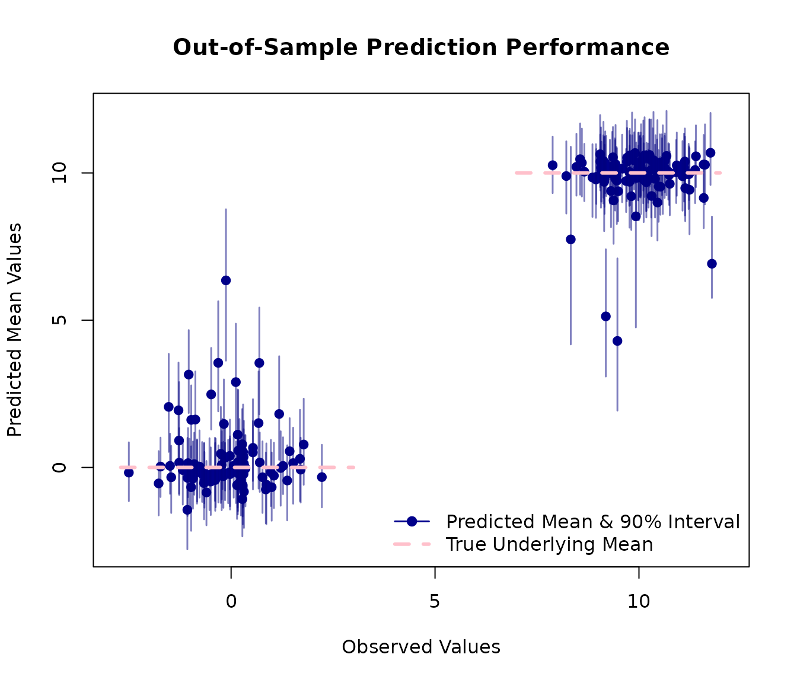

Bayesian Regression and Prediction with AddiVortes
John Paul Gosling and Adam Stone
2025-09-09
Source:vignettes/prediction.Rmd
prediction.RmdThis vignette demonstrates the Bayesian regression and prediction
capabilities of the AddiVortes package. As a machine
learning alternative to BART, AddiVortes excels at non-parametric
regression using Voronoi tessellations. We will create a synthetic
dataset with a known underlying structure, fit a Bayesian regression
model, and then evaluate its predictive performance on new, unseen
data.
1. Generating a synthetic dataset
We start by creating a 5-dimensional dataset. The response variable
Y is determined by a simple rule based on the first two
predictors, X[,1] and X[,2], plus some random
noise. This allows us to know the “true” data-generating process, which
is useful for evaluating the model.
# Load the package
library(AddiVortes)
# --- Generate Training Data ---
set.seed(42) # for reproducibility
# Create a 5-column matrix of predictors
X <- matrix(runif(2500), ncol = 5)
X[,1] <- -10 - X[,1] * 10
X[,2] <- X[,2] * 100
X[,3] <- -9 + X[,3] * 10
X[,4] <- 8 + X[,4]
X[,5] <- X[,5] * 10
# Create the response 'Y' based on a rule and add noise
Y_underlying <- ifelse(-1 * X[,2] > 10 * X[,1] + 100, 10, 0)
Y <- Y_underlying + rnorm(length(Y_underlying))
# Visualise the relationships in the data
# The colours show the two underlying groups
pairs(X,
col = ifelse(Y_underlying == 10, "red", "blue"),
pch = 19, cex = 0.5,
main = "Structure of Predictor Variables")2. Fitting the AddiVortes Model
Next, we fit an AddiVortes model to our training data.
For this example, we’ll use a small number of trees (m=50)
for a quick demonstration.
# Fit the model
AModel <- AddiVortes(Y, X, m = 50, showProgress = FALSE)
# We can check the in-sample Root Mean Squared Error
cat("In-sample RMSE:", AModel$inSampleRmse, "\n")
#> In-sample RMSE: 1.04841The in-sample RMSE gives us an idea of how well the model fits the data it was trained on. However, the true test of a model is its performance on new data.
3. Out-of-Sample Prediction
To evaluate the model’s predictive power, we generate a new
“out-of-sample” test set using the same process as before. We then use
the predict() method on our fitted model
(AModel) to get predictions for this new data.
# --- Generate Test Data ---
set.seed(101) # Use a different seed for the test set
testX <- matrix(runif(1000), ncol = 5)
testX[,1] <- -10 - testX[,1] * 10
testX[,2] <- testX[,2] * 100
testX[,3] <- -9 + testX[,3] * 10
testX[,4] <- 8 + testX[,4]
testX[,5] <- testX[,5] * 10
# Create the true test response values
testY_underlying <- ifelse(-1 * testX[,2] > 10 * testX[,1] + 100, 10, 0)
testY <- testY_underlying + rnorm(length(testY_underlying))
# --- Make Predictions ---
# Predict the mean response
preds <- predict(AModel, testX,
showProgress = FALSE)
# Predict the 90% credible interval (from 0.05 to 0.95 quantiles)
preds_q <- predict(AModel, testX,
"quantile", c(0.05, 0.95), showProgress = FALSE)4. Visualising Prediction Performance
A plot is an effective way to visualise the model’s performance. We will plot the observed values from our test set against the model’s predicted mean values.
The red lines on the plot represent the true, underlying mean values (0 and 10) from our data-generating process. A good model should produce predictions that cluster around these lines. The blue vertical segments represent the 90% credible intervals for each prediction, giving us a sense of the model’s uncertainty.
# Plot observed vs. predicted values
plot(testY,
preds,
xlab = "Observed Values",
ylab = "Predicted Mean Values",
main = "Out-of-Sample Prediction Performance",
xlim = range(c(testY, preds_q)),
ylim = range(c(testY, preds_q)),
pch = 19, col = "darkblue"
)
# Add error lines for the 90% credible interval
for (i in 1:nrow(preds_q)) {
segments(testY[i], preds_q[i, 1],
testY[i], preds_q[i, 2],
col = rgb(0, 0, 0.5, 0.5), lwd = 1.5
)
}
# Add lines showing the true underlying means
lines(c(min(testY)-0.2, 3), c(0, 0), col = "pink", lwd = 3, lty = 2)
lines(c(7, max(testY)+0.2), c(10, 10), col = "pink", lwd = 3, lty = 2)
# Add a legend
legend("bottomright",
legend = c("Predicted Mean & 90% Interval", "True Underlying Mean"),
col = c("darkblue", "pink"),
pch = c(19, NA),
lty = c(1, 2),
lwd = c(1.5, 3),
bty = "n"
)
This plot shows that the model has successfully learned the underlying structure of the data with predictions clustering correctly around the true mean values of 0 and 10.